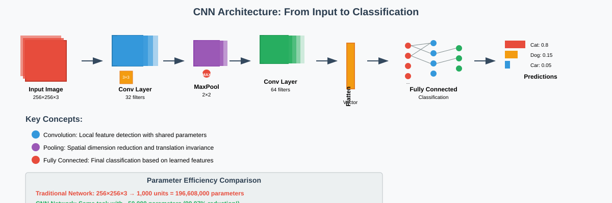
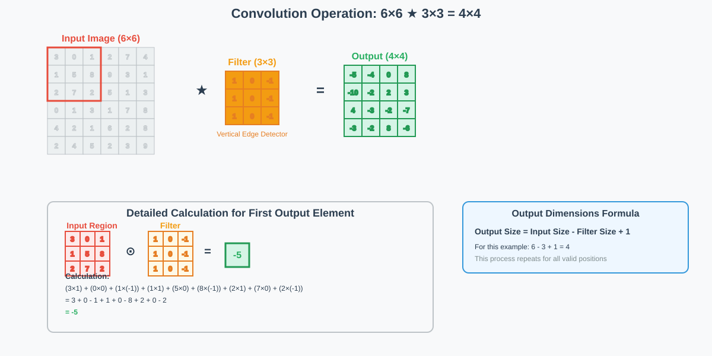
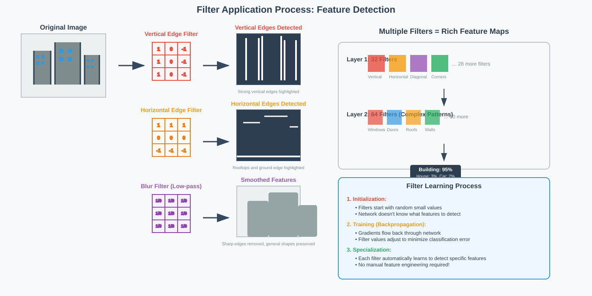
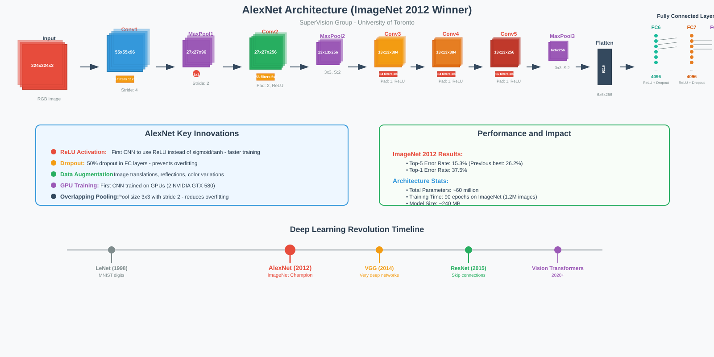

Convolutional Neural Networks (CNNs)
📋 Quick Navigation
- 🔍 Introduction to CNNs
- ⚙️ CNN Fundamentals
- 🔄 Convolution Operation
- 🧩 Building Blocks of CNNs
- 🎯 Filters and Feature Detection
- 📊 Pooling Operations
- 📏 Stride and Padding
- 🔗 Fully Connected Layers
- 🏗️ AlexNet Architecture
- 💡 Dropout Technique
- 📚 References & Further Reading
🔍 Introduction to CNNs
Convolutional Neural Networks (CNNs) represent a revolutionary approach to image processing and computer vision tasks. Unlike traditional fully connected neural networks, CNNs are specifically designed to process grid-like data such as images efficiently.
Why CNNs Matter
Traditional neural networks face significant challenges when processing images:
- Parameter Explosion: A 224×224 color image requires 150,528 input parameters
- Computational Inefficiency: Fully connected layers create massive parameter matrices
- Loss of Spatial Information: Traditional networks ignore pixel relationships
- Overfitting Risk: Too many parameters relative to available training data
CNNs solve these problems through:
- Parameter Sharing: Same filter applied across entire image
- Local Connectivity: Focus on local patterns and features
- Translation Invariance: Features detected regardless of position
- Hierarchical Learning: Simple features combine to form complex patterns

Mathematical Foundation
For a 6×6×3 color image processed by a traditional neural network with 10 hidden units:
Parameters Required = (6 × 6 × 3) × 10 = 1,080 weights + 10 bias = 1,090 total
For typical 224×224 images: (224 × 224 × 3) × 10 = 1,505,280 parameters!
CNNs dramatically reduce this through convolution operations.
⚙️ CNN Fundamentals
Core Concept: Image Patches
CNNs process images by breaking them into smaller patches rather than treating each pixel independently.
Example: A 256×256 grayscale image can be divided into 8×8 patches:
- Total patches: 32×32 grid of patches
- Patch size: 8×8 pixels each
- Mathematical representation: Each patch becomes a 64-dimensional vector
Parameter Reduction Strategy
Instead of learning different parameters for each image patch, CNNs use the same filter parameters across all patches. This creates:
- Massive parameter reduction: From millions to thousands
- Translation invariance: Same features detected anywhere in image
- Efficient learning: Fewer parameters mean faster training
- Better generalization: Reduced overfitting risk
Hierarchical Feature Learning
CNNs learn features in a hierarchical manner:
- Early Layers: Detect simple features (edges, corners, textures)
- Middle Layers: Combine simple features into complex patterns
- Deep Layers: Recognize high-level concepts and objects
- Final Layers: Classification based on learned representations
🔄 Convolution Operation
The convolution operation is the cornerstone of CNNs, enabling efficient feature extraction through filter application.
Mathematical Definition
For an input image I and filter F, convolution produces output O:
O(i,j) = Σ Σ I(i+m, j+n) × F(m,n)
Step-by-Step Example
Consider a 6×6 input image convolved with a 3×3 filter:

Input Matrix (6×6):
3 0 1 2 7 4
1 5 8 9 3 1
2 7 2 5 1 3
0 1 3 1 7 8
4 2 1 6 2 8
2 4 5 2 3 9
Filter (3×3):
1 0 -1
1 0 -1
1 0 -1
Convolution Calculation:
For the first position (top-left 3×3 region):
Result = (3×1) + (0×0) + (1×(-1)) + (1×1) + (5×0) + (8×(-1)) + (2×1) + (7×0) + (2×(-1))
= 3 + 0 - 1 + 1 + 0 - 8 + 2 + 0 - 2 = -5
Output Dimensions
Output Size = (Input Size - Filter Size + 1)
For our example: 6 - 3 + 1 = 4×4 output
Parameter Efficiency
Traditional approach: 108 × 10 = 1,080 parameters
CNN approach: (3 × 3 × 3) × 10 + 10 = 280 parameters
Reduction factor: ~75% fewer parameters!
🧩 Building Blocks of CNNs
🎯 Filters and Feature Detection
Filters (kernels) are the feature detectors in CNNs, learned automatically during training to identify important patterns.

Common Filter Types
Edge Detection Filters:
-
Vertical Edge Detection:
1 0 -1 1 0 -1 1 0 -1 -
Horizontal Edge Detection:
1 1 1 0 0 0 -1 -1 -1
Filter Learning Process
- Initialization: Random small values
- Training: Backpropagation optimizes filter weights
- Specialization: Each filter learns to detect specific features
- Hierarchy: Early filters detect edges, later filters detect complex patterns
📊 Pooling Operations
Pooling reduces spatial dimensions while preserving important information.
Max Pooling
Purpose: Extract dominant features from regions
Operation: Select maximum value from each pooling window
Example (2×2 Max Pooling):
Input: Output:
5 34 78 156 54 221
92 54 221 221
0 0 114 119 253 119
253 59 56 45
Benefits of Pooling
- Dimensionality Reduction: Reduces computational load
- Translation Invariance: Small position changes don't affect output
- Feature Concentration: Emphasizes strongest activations
- Overfitting Prevention: Acts as regularization
📏 Stride and Padding
Stride
Definition: Step size when moving filter across image
Impact on Output Size:
Output Size = ⌊(Input Size - Filter Size + 2×Padding) / Stride⌋ + 1
- Stride = 1: Dense feature extraction
- Stride = 2: 50% size reduction
- Larger Stride: More aggressive downsampling
Padding
Purpose: Control output dimensions and preserve border information
Types:
- Valid Padding: No padding (output smaller than input)
- Same Padding: Pad to keep output size equal to input
- Zero Padding: Fill border with zeros
Benefits:
- Information Preservation: Maintain edge and corner details
- Size Control: Precise output dimension management
- Network Design: Enable deeper architectures
🔗 Fully Connected Layers
Fully connected layers serve as the final classification component in CNNs.
Flattening Process
Matrix → Vector Transformation:
- Input: Feature maps from convolutional layers
- Process: Reshape 2D/3D tensors into 1D vectors
- Purpose: Interface between spatial features and classification
Architecture Integration
- Convolutional Layers: Feature extraction and spatial processing
- Pooling Layers: Dimensionality reduction and translation invariance
- Flattening: Convert spatial features to vector representation
- Fully Connected: Classification based on learned features
- Output Layer: Final class probabilities
🏗️ AlexNet Architecture
AlexNet revolutionized computer vision by demonstrating the power of deep CNNs on large-scale image classification.

🏆 Historical Significance
Created by: SuperVision group (Alex Krizhevsky, Geoffrey Hinton, Ilya Sutskever) - University of Toronto
Achievement: Winner of ImageNet 2012 competition
Impact: Proved deep learning superiority in computer vision tasks
🏗️ Architectural Details
Layer Structure
5 Convolutional Layers + 3 Fully Connected Layers
- Conv1: 96 filters, 11×11, stride 4
- Conv2: 256 filters, 5×5, stride 1
- Conv3: 384 filters, 3×3, stride 1
- Conv4: 384 filters, 3×3, stride 1
- Conv5: 256 filters, 3×3, stride 1
- FC6: 4096 neurons
- FC7: 4096 neurons
- FC8: 1000 neurons (ImageNet classes)
Key Innovations
- ReLU Activation: First CNN to use ReLU instead of sigmoid/tanh
- Overlapping Pooling: Pool size larger than stride
- Dropout: 50% dropout in fully connected layers
- Data Augmentation: Image translations, reflections, color variations
- Local Response Normalization: Lateral inhibition between neurons
Technical Specifications
Input: 224×224×3 RGB images
Parameters: ~60 million trainable parameters
Training: 90 epochs on ImageNet dataset
Performance: Top-5 error rate of 15.3% (previous best: 26.2%)
💡 Training Innovations
- GPU Acceleration: First CNN trained on GPUs (2 NVIDIA GTX 580)
- Parallel Architecture: Split network across multiple GPUs
- Advanced Regularization: Dropout + L2 weight decay
- Sophisticated Optimization: SGD with momentum and adaptive learning rates
💡 Dropout Technique
Dropout is a crucial regularization technique that prevents overfitting in deep neural networks.
🎯 Core Concept
During training, randomly "drop out" (set to zero) a fraction of neurons in each forward pass.
Key Parameters:
- Dropout Rate: Typically 0.5 (50% of neurons dropped)
- Application: Usually applied to fully connected layers
- Training vs. Inference: Only used during training, disabled during testing
🔄 Mathematical Formulation
For a layer with outputs h, dropout creates a modified output h':
h'ᵢ = hᵢ × bᵢ / (1-p)
Where:
- bᵢ ~ Bernoulli(1-p): Binary mask (0 or 1)
- p: Dropout probability
- (1-p): Scaling factor to maintain expected output
🛡️ Why Dropout Works
- Co-adaptation Prevention: Forces neurons to not rely on specific other neurons
- Ensemble Effect: Training multiple sub-networks simultaneously
- Robustness: Networks learn distributed representations
- Generalization: Reduces overfitting on training data
📈 Benefits in Practice
- Improved Generalization: Better performance on unseen data
- Reduced Overfitting: Particularly effective in large networks
- Training Efficiency: Simple to implement and computationally cheap
- Consistent Results: Reliable improvement across various architectures
📚 References & Further Reading
📖 Foundational Papers
- ImageNet Classification with Deep Convolutional Neural Networks - Krizhevsky, Sutskever & Hinton (2012)
- Deep Learning - Goodfellow, Bengio & Courville (2016)
- Gradient-Based Learning Applied to Document Recognition - LeCun et al. (1998)
🛠️ Practical Resources
- CS231n: Convolutional Neural Networks for Visual Recognition - Stanford University
- Deep Learning Specialization - Andrew Ng, Coursera
- PyTorch Tutorials - Official PyTorch CNN Tutorial
🚀 Advanced Topics
- Very Deep Convolutional Networks for Large-Scale Image Recognition - VGG Architecture
- Going Deeper with Convolutions - GoogLeNet/Inception Architecture
🔗 Interactive Resources
 CNN Implementation Tutorial
CNN Implementation Tutorial
🤗 Hugging Face Models: Vision Transformer Models